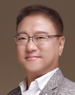
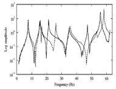
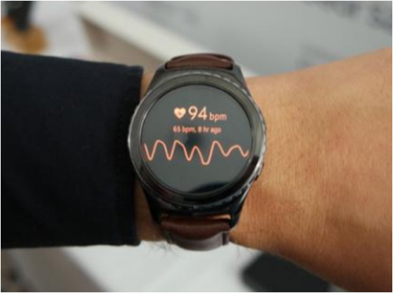
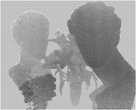

Members
Professor

- Members
- >
- Professor

YONG-HWA PARK, Ph.D
- Associate Professor
- Human-Machine iNteraction LAB (HUMAN lab)
- Department of Mechanical Engineering
- Korea Advanced Institute of Science and Technology (KAIST)
291 Daehak-ro, Yuseong-gu, Daejeon 34141, Korea - Office : +82-42-350-3235, Mobile : +82-10-3326-7337
- Email : yhpark@kaist.ac.kr, Homepage : human.kaist.ac.kr
RESEARCH PORTFOLIO
Pursuing intelligent machines that recognize human's condition and events autonomously, the HUMAN lab focuses on the sensory interactions between human and machine through vibration, sound, and optical ways. This includes researches on the mechanical vibration, auditory intelligence, and sensing technology from dynamical systems with applications to event recognition and health monitoring of machines and human body as well. Condition monitoring and fault diagnosis are strongly pursued through the vibration and acoustic domain knowledge with physics-informed machine learning. As an enabling measurement technology, 3D measurement system (Lidar) is developed by using a noble optical scheme for human and machine condition monitoring. All research topics are based on the strong domain knowledges with interdisciplinary approach in vibration, acoustics and optical processing in the time-frequency-model parameter domain along with the state-of-the-art machine learning algorithm as follows:
Vibration Modeling/Analysis

As fundamental research, vibration principles focusing on inverse problem, finite element method and experimental modal modeling are studied with emphasize on the modeling and analysis of complex dynamical systems and system identification. This covers Finite modeling updating, sub-structuring and fault identification. This vibration modeling and analysis specialties work as strong domain knowledge in human/machine health monitoring, prognostics and health management (PHM) with a novel high-fidelity digital twin.Acoustic Event Recognition
Targeting robust acoustic event detection against harsh listening condition in the real world, we focus on sound classification, localization, and separation with knowledge on the human auditory system and state-of-the-art neural network scheme. We strongly pursue a human-like binaural sound recognition by in-depth functional analysis of human auditory system and HRTF in time-frequency-spatial domain. Machine diagnosis, event detection, health monitoring devices, and auditory system of humanoid robot are major applications.
Biometric Recognition by Human Body Vibration

Non-invasive health monitoring is studied including cardiovascular system (blood pressure), glucose level, and respiratory disease by means of human body sound and vibration characteristics. Intensive coupled-field finite element analysis, bio mimicking prototyping (virtual patient), time-frequency signal analysis and data-driven machine learning modeling schemes are utilized interdisciplinarily. Wearable, non-invasive continuous monitoring, biometric authentication, and glucose sensors are expected outcomes.
3D Shape and Motion Measurement

Non-contact 3D shape and motion sensors are developed as a building block for the measurement of human and machine conditions. This group's novel optical system and signal processing provide compact, low-cost 3D Lidar system for autonomous vehicles and robots. Precise and robust 3D measurement is the main target. Motion amplifier system is developed for non-contact measurement of vibrations. 3D object detection and human conditions monitoring are major applications combine with 3D AI algorithms.ACADEMIC SPECIALTIES
Structural Vibration and Modal Analysis
Vibration modeling and modal analysis of mechanical systems. Finite element-based structural dynamics analysis. System identification and fault detection. reduced order model and sub-structuring. Random vibration an d experimental modal analysis. Finite element model updating. Coupled-field vibration analysis. Uncertainty qualification in dynamical systems.AI for Sound and Vibration, Human Perception
CKnowledge-based AI for machine health monitoring by sound and vibration signatures. Event detection utilizing time-frequency features. Data-driven modeling by Physics-informed AI. Human auditory system and HRTF. Human sound analysis for medical applications (cough, heart beat). Human body vibration modeling and biometric authentication. Cardiovascular system vibration analysis and system identification based on coupled field system and ML.3D Measurement Systems (TOF, LiDAR)
Time-of-Flight (TOF) principles for 3D sensor device. Scanning Lidar for autonomous vehicle and robots. Vision based remote vibration sensing. Motion amplification. AI for 3D scene understanding. Design of micro-opto-electro-mechanical (MOEMS) scanners and optical resonators for imaging and sensor applications. Multi-disciplinary coupled-field vibration modeling and analysis of micro optical systems. Imaging optical systems.
CAREER PATH
| 8/2016–present |
Associate Professor, Department of Mechanical Engineering, KAIST, Research and development of human-machine interacting device and systems. |
| 12/2021-present | Adjunct Professor, Robotics Program, KAIST |
| 9/2017–8/2021 | Adjunct Professor, KAIST Institute (KI) for Artificial Intelligent, KAIST |
| 2/2012–8/2016 | Research Master, Samsung Advanced Institute of Technology (SAIT), Samsung Electronics, Suwon, Korea. Research and developments of future imaging devices and systems. Conducted 3 commercialization projects utilizing 3D image sensor. |
| 3/2005–1/2012 | Principal Engineer, SAIST, Samsung Electronics, Yongin, Korea. Developments of optical resonators for 3D image sensor and resonating MEMS scanner for laser display systems. Research and business development. |
| 7/2003–2/2005 | Senior Engineer, Visual Display Division, Samsung Electronics, Suwon, Korea. Development of micro-display devices and next generation Digital Light Processing systems with LED/LD light sources. Contributed to launching LED TV for world-first. Research and business development of new display products |
| 9/2000–6/2003 | Postdoctoral Research Associate, Department of Aerospace Eng., University of Colorado at Boulder, supervised by Prof. K. C. Park, Conducted structural dynamics optimization and parallel computing. Coupled field structural dynamic analysis and design of microsystems. Conducted group research with CAMPmode (Center for Advanced Manufacturing and Packaging of Microwave, Optical, and Digital Electronics for Microstructures), Department of Mechanical Eng., University of Colorado at Boulder, with Prof. K. C. Park, Victor Bright and Prof. Y. C. Lee. Optical & RF resonating MEMS design and multi-disciplinary micro-systems simulation. |
| 9/1999–8/2000 | Postdoctoral Research Associate (during military service), Acoustics and Vibration Laboratory, Korea Research Institute of Standard and Science (KRISS), Standardization, system identification, experimental analysis of human body vibration. |
| 3/1991–8/1999 | Ph.D and M.S., NOVIC, Department of Mechanical Engineering, KAIST, Taejon, Korea. Structural Dynamics, Vibration and Modal Analysis. System identification. |
| 3/1987–2/1991 | B.S., Department of Mechanical Engineering, KAIST, vibration modeling and analysis. |
DISSERTATION
| 3/1993–8/1999 | Ph. D in Mechanical Engineering, KAIST Dissertation: “Optimal Structural Dynamics Modification Using Frequency Response Function Synthesis and Its Applications”, supervised by Prof. Youn-sik Park. Conducted design sensitivity analysis, experimental modal analysis and structural optimization. Accomplished formulation of experimental model-based substructuring and structural parameter identification. |
| 3/1991–2/1993 | M. S. in Mechanical Engineering, KAIST Thesis: “A Study on the String and Beam Vibration Analysis subject to Moving Boundaries Using Wave Propagation Method”, supervised by Prof. Youn-sik Park. Accomplished transient analysis of deploying structural members. Analytical formulation of dynamic behavior of time-varying systems. |
| 3/1987–2/1991 | B. S. in Mechanical Engineering, KAIST Qualifying thesis: “Damage Detection Using Gauss Quadrature”, supervised by Prof. Yang-Han Kim. Conducted vibration signature analysis. Signal processing and structural health monitoring. |
RESEARCH PROJECTS (책임/공동 과제 총연구비 179.6억원: 2016.8 KAIST부임후 75.6억원)
| 11/2022-08/2023 | LG전자㈜, “전류신호 이미지화 기법을 이용한 컴프레서 저널베어링 마모 진단기술 개발” (연구비 0.8억원) |
| 10/2022-12/2022 | 한국생산기술연구원, “하모닉 감속기 고장특성 분석” (연구비 0.19억원) |
| 10/2022-11/2022 | 삼성중공업㈜, “악조건 속에서의 영상 데이터를 이용한 회전체 고장진단” (연구비 0.1억원) |
| 08/2022-11/2022 | 삼성중공업㈜, “음향 인식 기술 기반 야드/선박 배전반 아크방전 조기 검출 Feasibility Study” (연구비 0.1억원) |
| 08/2022-07/2024 | 한국동서발전㈜, “인공지능 기반 음향인식 기술을 이용한 수배전반 스마트 안전진단 플랫폼 개발” (연구비 1.9억원) |
| 07/2022-12/2022 | KAIST 내부과제, “전류데이터 및 정상데이터 기반 생산설비 모터 AI고장진단 개발” (연구비 0.15억원) |
| 07/2022-09/2022 | 삼성중공업㈜, “악조건 속에서 전류 다변량 시계열 정상데이터를 이용한 모터 고장진단” (연구비 0.1억원) |
| 06/2022-12/2023 | 국방과학연구소, “음향진동 자료 기반 인공지능 고장진단체계의 K1 전차 동력장치 진단 연구” (연구비 6.25억원) |
| 06/2022-05/2023 | 한국전력연구원, “인공신경망 및 전산역학 기반의 풍력 타워 구조 건전성 감시 기법 개발” (연구비 0.5억원) |
| 05/2022-06/2022 | 삼성중공업㈜, “악조건 속에서의 진동 다변량 시계열 정상 데이터를 이용한 회전체 수명예측” (연구비 0.1억원) |
| 04/2022-03/2023 | LS전선㈜, “정상데이터 기반 구동모터 고장진단 기술 개발” (연구비 1.8억원) |
| 03/2022-04/2022 | 삼성중공업㈜, “악조건 속에서의 진동 다변량 시계열 정상 데이터를 이용한 회전체 고장진단” (연구비 0.1억원) |
| 11/2021-02/2022 | 삼성중공업㈜, “카메라 진동 특성을 이용한 모션 증폭 알고리즘 개선 기술의 타당성 검증” (연구비 0.1억원) |
| 11/2021-06/2022 | KAIST 내부과제, "영구자석 전동기 고장 진단을 위한 고장데이터 구축", (연구비 0.5억원) |
| 07/2021-12/2021 | KAIST 내부과제, "진동신호기반 제조설비 이상진단을 위한 모션증폭기술 및 디지털트윈 모델링 기법 개발” (연구비 0.2억원) |
| 04/2021-12/2022 | 한국조선기자재연구원, "해양수산산업 핵심기자재 국산화 기술개발" (연구비 2억원) |
| 03/2021-02/2026 | 한국산업기술진흥원(산업통상자원부), "스마트야드 전문인력양성", 2023.3부터 책임교수 (총연구비 24.96억원 중 2023년 이후 15.6억원 포함) |
| 03/2021-12/2022 | 한국해양과학기술원, "선내 상황 인식을 위한 객체 인식 및 항해장비 정보(화면, 음향) 인식 AI 모델 개발" (연구비 4억원) |
| 12/2020–12/2021 | 한국조선해양 (KSOE), “선체 블록 정도 고속/고정밀 계측 기술 개발” (연구비 1.0억원) |
| 10/2020–12/2022 | 한전원자력연료(주), “지진조건을 고려한 제어봉 낙하 모사기술 개발 및 검증” (연구비 3.7억원) |
| 4/2020–7/2020 | 삼성중공업(주)판교R&D센터, “선박 내 영상 진단 시스템 적용을 위한 배경 진동 제거 알고리즘 발굴” (연구비 0.1억원) |
| 8/2019–12/2022 | 해양수산부, “연안고립자용 한국형전천후구조보트 개발 (세부과제: 구조자 인식을 위한 영상 알고리듬 개발” (연구비 3억원) |
| 4/2020–11/2021 | 한전원자력연료(주), “핵연료 내진해석 평가체계 개발 및 검증” (연구비 1.2억원) |
| 2/2020–1/2023 | 인바디, “오실로메트릭 신호, K-Sound 신호와 심혈관계 파라미터의 상관관계 도출” (연구비 3억원) |
| 6/2020–12/2020 | 산업통상자원부, “해상 복합 발전 시스템 융합 설계 및 운영 지능화 고급트랙” (총연구비 11억원중 참여 연구비 2억원) |
| 4/2020–7/2020 | KAIST 내부과제, “재난 구조를 위한 센서 네트웍 및 AI 기반 상황 인식 기술 개발” (연구비 0.5억원) |
| 6/2019–5/2022 | 인텍플러스㈜, “초소형 3D 센서 플랫폼 개발” (연구비 3억원) |
| 1/2018–12/2021 | 과기정통부, “고령 사회에 대응하기 위한 실환경 휴먼케어 로봇기술개발: 세부과제명: 고령자 검출 및 추적/환경 상황단서 인식 개발” Development of 3D scene recognition module and algorithm for silver care robots. (총연구비 10억원중 2억원) |
| 12/2019–8/2020 | 한국조선해양 (KSOE), “실시간 부재 형상 계측 및 모서리 궤적 자동 추출 기술 개발” Development of high precision 3D fusion sensor for robot automation in the ship construction site of Hyundai heavy industry (연구비 2.4억원) |
| 12/2018–5/2021 | 한국원자력연구원(KAERI), “원자로집합체 축소모형의 동특성시험 및 모형화 방법 타당성 검증: Modal test of small-sized model for reactor assembly and validation of modeling method” Vibration analysis of new reactor system and development of finite element model. (연구비 3.5억원) |
| 1/2018–12/2020 | Korea Institute of Machinery and Materials (KIMM). “Development of 3D Scene Recognition Solution for Autonomous Working Robot” Development of a compact 3D imagining device and its signal processing scheme for obstacle detection and 3D mapping of autonomous working robot systems in small to medium size factories. (연구비 3억원) |
| 9/2017–12/2019 | (주) 성신알에스티, “Development of rail flow detecting car for the monitoring system of rail damage inspection and concrete crack detection module” Experimental vibration analysis and finite element model of new rail investigation car (연구비 1.9억원) |
| 4/2017–2/2020 | National Research Foundation (NRF), “Development of 3D Image Sensor for Autonomous Vehicles” Development of a compact and low cost 3D sensor for autonomous vehicles. (연구비 5억원) |
| 1/2019–12/2019 | Long-term URP (Undergraduate Research Program), KAIST, “Basic study for the biometric authentication utilizing vibration characteristics of human fingers” Basic study on the human finger vibration characteristics for biometric application of future mobile devices (연구비 4백만원) |
| 1/2019–12/2019 | Long-term URP (Undergraduate Research Program), KAIST, “Development of Smart Active Sheet for Deep Sleep” Basic study and prototyping of comport and active bed system for deep sleep based on the sleep science. (연구비 5백만원) |
| 3/2018–10/2018 | RED&B, KAIST. “Development and project planning of a core technology used for intelligent robot capable of automatic operation in the small and medium sized factories” Project planning with KIMM engineers for autonomous robot development. (연구비 4천만원) |
| 3/2018–10/2018 | URP (Undergraduate Research Program), KAIST, “3D depth method using optical flow” Preliminary study and experiment for new 3D imaging device concept. (연구비 2백만원) |
| 6/2017–12/2017 | URP (Undergraduate Research Program), KAIST, “Pre-research for Development of Non-invasive Blood Glucose Level Measurement: Machine Learning Algorithm for Blood Glucose Level and Human Dynamic Modulus” Preliminary study and experiment for new non-invasive glucose sensing device concept based on the vibration signal of human body. (연구비 2백만원) |
| 6/2017–12/2017 | K-School 문제중심 융합연구 본과제, KAIST, “Development of Core Technology of Non-invasive, Portable Diabetes Measurement Device” Group research for new non-invasive glucose sensing device concept based on the vibration signal of human body. (연구비 2억원) |
| 1/2017–6/2017 | URP (Undergraduate Research Program), KAIST, “Simulation study and verification of distortion-decreased imaging for a robust three-dimensional image sensor” Enhancement of 3D depth algorithm using signal processing considering nonlinearities. (연구비 2백만원) |
| 12/2016–2/2017 | K-School 문제중심 융합연구 기획과제, KAIST, “Development of Non-invasive, Portable Diabetes Measurement Device” Research plan of group research for new non-invasive glucose sensing device concept based on the vibration signal of human body. (연구비 2천만원) |
| 8/2016–12/2019 |
Department of Mechanical Engineering, KAIST. “Signal processing of 3D image sensor and search for new compact module for autonomous driving applications” Development of a novel 3D imagining device and its signal processing scheme for obstacle detection and 3D mapping of autonomous robot systems and vehicle applications. (연구비 2억원) |
이하 KAIST 부임전 과제
| 3/2013–6/2016 | Device and System Research Center, Samsung Advanced Institute of Technology, Samsung Electronics, “Development of 3D Image Sensor for User Recognition in Display System” and “Development of 3D Image Sensor for Autonomous Robot Navigation” Development of next generation-3D imagining device for obstacle detection and indoor 3D mapping of autonomous robot systems for future home applications. (연구비 61억원) |
| 11/2010–2/2013 | Device and System Research Center, Samsung Advanced Institute of Technology, Samsung Electronics, “Development of 3D Image Sensor for User Recognition in Display System” Development of next generation-3D imagining system for user interface and gesture recognition for IT device applications. (연구비 25억원) |
| 3/2013-2/2014 | Device and System Research Center, Samsung Advanced Institute of Technology, Samsung Electronics, “능동형 센서 기반 HD급 3D Depth 카메라 개발” 산업융합원천기술 개발사업, 지식경제부 국가과제. 주관기관 참여, 핵심요소기술 개발수행. KETI, 광운대 공동 (참여연구, 총 연구비38억) |
| 1/2008–10/2010 | Micro Systems Lab, Samsung Advanced Institute of Technology, Samsung Electronics, “Development of 3D Camera” Development of next generation-3D imagining system for consumer camera devices. (연구비 18억원) |
| 1/2007–1/2008 | Micro Systems Lab, Samsung Advanced Institute of Technology, Samsung Electronics, “Design for Reliability of Scanning Display Device” Development of ultra-small mobile display systems. MEMS resonating mirror design and optimization. |
| 3/2005–1/2007 | Micro Systems Lab, Samsung Advanced Institute of Technology, Samsung Electronics, “Development of 2D MEMS scanner” Development of MEMS scanning display system. 2D resonating MEMS scanner design and optimization. |
| 8/2004–2/2005 | Visual Display Division, Samsung Electronics, “Development of LED based DLP small projector” Conducted joint development with Carl Zeiss, Osram and TI (International Consortium). |
| 4/2004–12/2004 | Visual Display Division, Samsung Electronics. Global collaboration with Russian Society of Academy. Initiated Display Technology LAB in Samsung Research Center (SRC) in Moscow. Conduct three oversea outsourcing projects in MEMS display area with Bauman State University in Moscow. |
| 2/2004–2/2005 | Visual Display Division, Samsung Electronics, “Development of LED based Digital Light Processing (DLP) Rear Projection TV” Conducted global joint development of next generation DMD package systems in collaboration with Samsung semiconductor division and Texas Instrument. Development of next generation DLP systems (HD3 diamond pixel DMD and its optical module). |
| 1/2002–6/2003 | Univ. of Colorado at Boulder, “Optimization of Switching Speed and Actuation Energy of RF MEMS Switches” sponsored by Raytheon. Conduct electro-thermal-fluid-structural coupled analysis of MEMS switch. Design optimization for high-speed, low-loss MEMS switches for RF circuit applications. |
| 10/2000–6/2003 | Univ. of Colorado at Boulder, “Dynamics of MEMS resonator for loss modeling and design” sponsored by Coventor Ware Inc. Electro-mechanical coupled modeling for MEMS resonator and filter. Identified energy loss mechanism and improved dynamics characteristics of RF micro resonators by multi-physics micro-system simulation. |
| 9/2000–6/2003 | Univ. of Colorado at Boulder, “Modeling, Simulation and Validation of High-Fidelity Structural Dynamical Systems: Partitioned Structural Eigenvalue Analysis” sponsored by NSF-SNL Grant CTS-9732179. Implementation of parallel computation of structural eigenvalue analysis for large-scale and massive computation. |
| 9/1999-8/2000 | Acoustics and Vibration Lab, KRISS, “Development of the Human Sensibility Evaluation Simulator” sponsored by the Ministry of Science and Technology. Conducted vibration transmission analysis of human body. Performed biodynamic modeling and identification. |
| 9/1999-1/2000 | NOVIC, KAIST, “Comparison Study on the Vibration Characteristics of Commercial Engine Blocks and Power-trains” sponsored by Hyundai Motor Company. Performed experimental modal analysis. Conducted FE Model updating and correlation analysis. |
| 9/1998-8/1999 | NOVIC, KAIST, “A Study on the Unified Analysis and Design Technique for Low-noise Vibro-acoustic Systems” sponsored by the Korea Science and Engineering Foundation (KOSEF). Conducted structural-acoustic coupling analysis of vehicle interiors. Design optimization. |
| 9/1995-8/1998 | NOVIC, KAIST, “Inverse Problem Solvers in Noise and Vibration Engineering: Methods and Applications” sponsored by KOSEF. Conducted indirect force identification, regularization of signatures, and placements of vibration measuring sensors. |
| 9/1992-8/1995 | NOVIC, KAIST, “Development of Basic Technologies for Low Noise/Vibration Vehicle Design” sponsored by KOSEF. Conducted FE and experimental modal analysis, FE model updating for white body vehicle. Semi-structural acoustic coupling analysis. Accomplished experimental structural optimization. |
| 4/1993-3/1995 | NOVIC, KAIST, “Acceleration Canceling Hydrophone Model Analysis” sponsored by ADD. Developed FE code for modal analysis of piezoceramic-polymer structure with MATLAB. Coupled field analysis of piezoceramic sensor. |
LECTURES
| 2023/Spring | ME Co-op VII (INT482, INT495), ME, KAIST - Domestic & International (New) |
| 2023/Spring | Mechanical Vibration (ME351), ME, KAIST (Best Lecture Award) |
| 2022/Fall | ME Co-op VII (INT482, INT495), ME, KAIST |
| 2022/Fall | Random Data: ANALYSIS AND PROCESSING (ME591), ME, KAIST |
| 2022/Spring | ME Co-op VI (INT482, INT495), ME, KAIST |
| 2022/Spring | Mechanical Vibration (ME351), ME, KAIST |
| 2021/Fall | ME Co-op V (INT482, INT495), ME, KAIST |
| 2021/Fall | Random Data: ANALYSIS AND PROCESSING (ME591), ME, KAIST |
| 2021/Spring | ME Co-op IV (INT482, INT495), ME, KAIST |
| 2021/Spring | Mechanical Vibration (ME351), ME, KAIST (Best Lecture Award) |
| 2021/Spr.~present | Artificial Intelligence in Mechanical Engineering (KAIST-MOOC), ME, KAIST: Newly established course |
| 2020/Fall | ME Co-op III (INT482, INT495), ME, KAIST |
| 2020/Fall | Random Data: ANALYSIS AND PROCESSING (ME591), ME, KAIST |
| 2020/Spring | ME Co-op II (INT482, INT495), ME, KAIST |
| 2020/Spring | Artificial Intelligence in Mechanical Engineering (ME491), ME, KAIST: Newly established course |
| 2019/Fall | Vibration in Linear System (ME551), ME, KAIST |
| 2019/Fall | Capstone Design II (ME401), ME, KAIST |
| 2019/Fall | ME Co-op I (INT482, INT495), ME, KAIST: Newly established course |
| 2019/Spring | Vibration in Linear System (ME551), ME, KAIST |
| 2019/Spring | Capstone Design I (ME400), ME, KAIST |
| 2018/Fall | Renewable Ocean Energy System (ME597), ME, KAIST |
| 2018/Fall | Capstone Design II (ME401), ME, KAIST |
| 2018/Fall | Engineering Design (ME340), ME, KAIST |
| 2018/Spring | Capstone Design I (ME400), ME, KAIST |
| 2018/Spring | Mechanical Vibration (ME351), ME, KAIST |
| 2017/Fall | Capstone Design II (ME401), ME, KAIST |
| 2017/Fall | Engineering Design (ME340), ME, KAIST |
| 2017/Spring | Capstone Design I (ME400), ME, KAIST |
| 2017/Spring | Mechanical Vibration (ME351), ME, KAIST |
| 2016/Fall | Dynamics (ME251), ME, KAIST |
| 2017-2020 | 3 Undergraduate Research Program (URP490) and 2 Long-term URP, ME KAIST |
| 2016-2020 | 47 Individual Study (ME495), ME KAIST |
| 2003/Spring | Computational Methods in Dynamics, Aerospace Eng. Sciences, Univ. of Colorado at Boulder, partial participation. |
INVITED LECTURES, SEMINARS
International
| 1/2023 | Source Localization and Sound Event Detection for Humanoid Robots, Tohoku Univ. |
| 7/2022 | High Fidelity Digital Twin - Structural Vibration and System Identification for Fault Diagnosis, Univ. of Colorado at Boulder |
| 2/2022 | KAIST Research Overview for Jabra-KAIST Collaboration, GN Audio, INC (Jabra, Denmark) |
| 10/2020 | AI for Sound and Vibration: Cough Detection Camera (CNN); Person Identification using Finger Vibration (SVM), 2020 CAV workshop, Penn State Univ. |
| 10/2020 | Noise and Vibration Researches at NOVE, KAIST, 2020 CAV workshop, International Liaison Talks, Penn State Univ. |
| 11/2019 | Health Sensor Application using Human Vibration (invited talk), APVC 2019, Sydney, Australia |
| 4/2018 | Coupled Field Vibration Analysis of Bio-systems for Non-invasive Measurement of Biomarkers, Univ. of Colorado at Boulder, USA |
| 11/2017 | Voice Recognition with Acoustic Metamaterial, DTU, Denmark. |
| 12/2016 | Machines Interacting with Human by 3D Recognition, ITB, Indonesia |
| 9/2018 | A Wearable Non-invasive Glucose Sensor Utilizing Coupled field Vibration Analysis, International Workshop on Micro/Nano-engineered Smart Sensors & Devices, KAIST |
| 2/2009 | Acoustic Recognition: Smart Transducers and Artificial Intelligence, KAIST-DTU Joint Workshop, ME KAIST |
| 9/2018 | Speech separation in cocktail party under reverberant environment, 2018 KAIST-KTH Joint Workshop on Vibro-acoustics, ME KAIST |
| 9/2018 | Human-related Parameter Identification via Vibration Signal Processing for Health Sensor Applications, 2018 KAIST-KTH Joint Workshop on Vibro-acoustics, ME KAIST |
| 10/2017 | Human Machine Interaction, KAIST-ITB Joint Workshop, ME KAIST |
Domestic
| 02/2023 | 진동, 음향, 이미지 데이터를 이용한 AI 기반 이상진단 및 응용, ㈜LIG넥스원 |
| 01/2023 | 자율주행용 Lidar 및 디지털헬스 기술 - “카이스트 최고 교수들의 CES 2023 트렌드 대해부”, 한국경제신문사 |
| 10/2022 | 제조 지능화와 안전을 위한 첨단 3D 시각 및 음향 센서 (포스코 석좌 포럼), ㈜포스코 |
| 08/2022 | 컴프레서 고장진단 기술, LG 전자 |
| 08/2022 | Binaural Source Localization and Sound Event Detection for Humanoid Robot (소음진동공학회 인공지능 여름강좌 “소리를 보다”), 한국소음진동공학회 |
| 03/2022 | 모터 고장진단 기술, LG 전자 |
| 11/2021 | 첨단 3D 시각 센서 및 청각 센서 (국방부 고위공무원 미래국방전략 혁신과정), 국방부/을지연구소 |
| 11/2021 | 인간-기계 상호작용 (중소기업 R&D 공유센터 기술발표회 2차), 4대 과기원 공동 - 중소기업 R&D 공유센터 |
| 9/2021 | 음향인식기술, ㈜ARE |
| 9/2021 | 인간-기계 상호작용 (중소기업 R&D 공유센터 기술발표회 1차), 4대 과기원 공동 - 중소기업 R&D 공유센터 |
| 9/2021 | 음향 기반 고장진단기술, 삼성중공업(선박해양연구소) |
| 8/2021 | 미래 진동음향기반 측정, 진단, 인식 기술 (삼성중공업 기술개발본부 세미나), 삼성중공업(주) |
| 7/2021 | 진동음향기반 고장진단 세미나, 생산기술연구원 |
| 2/2021 | 인체의 음향, 진동 인식 기술, 대한기계학회 인공지능연구회 winter school. |
| 4/2020 | CES 2020를 통해 바라본 첨단기술 및 산업 동향, ME, KAIST |
| 2/2019 | CES 2019를 통해 바라본 첨단기술 및 산업 동향, 기계연구원(KIMM) |
| 2/2019 | CES 2019기술 동향, KAIST 기계공학과 교수 워크샵 (AMEC) |
| 6/2017~6/2019 | 모드해석 산학협동공개강좌 (진동기본이론 및 구조진동해석), NOVIC, KAIST |
| 11/2018 | Machines Interacting with Human by 3D Recognition, 전자통신연구원(ETRI) |
| 10/2018 | 인간의 청각을 모사한 음성인식 기술 및 미래 연구 과제, 서울대의과대학 |
| 8/2018 | Fundamentals of Vibration and Acoustics for Audiology, 서울대의과대학 |
| 6/2018 | Machines Interacting with Human by 3D Recognition, ㈜Intekplus |
| 6/2018 | Machines Interacting with Human by 3D Recognition, 한국표준과학연구원(KRISS) |
| 6/2017 | Human-Machine Interaction-미래 기술 소개, 유신고등학교 |
| 11/2016 | 로봇에 관한 나의 꿈에 대하여, 착한과학연구소 |
| 11/2016 | 3D Image Sensor for Human–Machine Interaction, 한국항공우주연구원 (KARI) |
| 8/2018 | 미래 기술 소개, 과학영재캠프 특강, KAIST 과학 영재 교육원 |
| 5/2017 | Machines Interacting with Human by 3D Recognition, Invited Colloquium, CT, KAIST |
| 10/2016 | 달리는 마우스에 우리 꿈 싣고서, 그리고 로봇에 관한 나의 꿈에 대하여, MR KAIST |
| 3/2019 | CES 2019를 통해 바라본 첨단기술 및 산업 동향, 기계항공초청세나, ME, KAIST |
| 3/2018 | CES 2018을 통해 바라본 첨단기술 및 산업 동향, 기계항공초청세나, ME, KAIST |
| 10/2016 | Machines Interacting with Human: 3D Image Sensor, NOVIC KAIST |
| 2/2012 | 최신 음향, 진동 연구 동향, KAIST 소음진동연구센터 워크샵 등 2회 |
| 11/2011 | 마이크로시스템과 Image Science, 경희대 응용과학대학 융복합 워크샵 |
| 2/2011-10/2013 | 이미지센서 기술 및 응용, 삼성전자 첨단기술연수원 전문가교육과정, 총9회 |
| 2008-2015 | 마이크로시스템과 Image Sensor응용, 사업화 전략, 삼성전자 각사업부 대상, 20여회 |
| 5/2014 | KAIST 멘토링콘서트, KAIST 총동문회 주관, 대기업부문 진로 멘토 |
PROFESSIONAL ACTIVITIES
| 위원장 | KAIST 기계공학과 산학협력위원회, 2017.7-present |
| 핵심교수 /겸임교수 | KAIST Institute for AI (인공지능연구소), 2017.9-present |
| 위원 | KAIST AI 연구허브 구축 기획위원회, 2020.8-2020.12 |
| 위원 | 제조빅데이터 AI 슈퍼컴퓨터센터 설립위원회, 2019.8-2020.7 |
| 위원 | AI 대학원 설립추진위원회, 2018.6-2020.6 |
| 위원 | KAIST 기계공학과 학생위원회, 2017.7-2018.12 |
| Associate Editor | JMST Advances, 2018-present |
| Editorial Board | International Journal of Precision Engineering and Manufacturing (IJPEM), 2017-2018 |
| Conference Chair | SPIE Photonics West, MOEMS and Miniaturized Systems, 2013-present. |
| Local Org. Chair | International Conference of Motion and Vibration Control (MOVIC), 2017-2018 |
| Scientific Committee | Asia-Pacific Vibration Conference (APVC), 2019-present |
| Program Committee | International Meeting on Information Display (IMID), 2006 |
| 사업이사/편집이사 | 대한기계학회 동역학 및 제어 부문, 2016-present |
| 이사 | 대한기계학회 인공지능연구회, 2020-present |
| 이사/조직위원장 | 한국창의응용학회, 2017-present |
| 편집위원/평의원 | 한국소음진동공학회, 2017-present |
| Executive | TRIZ Association of Samsung Advanced Institute of Technology, 2010.1-present |
| International Expert | TRIZ Expert Level 2, International TRIZ Association, 2008-present |
| Lifetime Member | The International Society for Optical Engineering (SPIE) |
| Lifetime Member | Korean Society of Mechanical Engineers (KSME) |
| Lifetime Member | Korean Society for Noise and Vibration Engineering (KSNVE) |
| Member | Acoustical Society of Korea (ASK) |
CONSULTING
| 2020.11.6. ~ 2021.1.5. | 성오정밀 : 데이터 인프라 구축 AI 컨설팅 및 AI 솔루션 실증지원 |
| 2020.10.8. ~ 2020.12.7. | ㈜ 동아엔지니어링: 데이터 인프라 구축 AI 컨설팅 및 AI 솔루션 실증지원 |
| 2020.9.5. ~ 2021.1.31. | 언배리어 (카입) : 수어통역웨어러블기기 신호처리 및 센서 자문 |
| 2020.9.4. ~ 2020.12.31. | (주)에스엔, 남동발전: EES 음향을 이용한 고장 진단 |
| 2020.9.1. | YTN : 열화상카메라 온도측정 자문 |
| 2020.11.27. | 천문연 : 달 탐사선 Light Field 카메라 설계 검토 |
| 2020.4.16. ~ 2020.7.15. | 삼성중공업(판교): 선박 내 영상 진단 시스템의 배경 진동 제거 알고리즘 |
| 2019.9.1. ~ 2019.12.31. | 한국조선해양 : 선체 블록 정도 고속/고정밀 계측 기술 개발 타당성 검토 |
| 2019.10.1. ~ 2020.1.31. | 한국조선해양 : 신성장동력 혁신 기술발굴 |
| 2019.7.18 ~ 7.19. | 삼성중공업 (거제): 미래 과제 도출 워크샵 및 기술 자문 |
| 2019.11.30. | ㈜스카이시스 : 영상의 진동문제 해결 |
| 2019.3.27. | 현대중공업 : 용접 작업장의 진동문제 해결 |
| 2019.4.16. | LG 이노텍 : 카메라기술 외부전문가 인터뷰 |
| 2018.7.11. ~ 7.13. | ㈜크롬 : 벤쳐기업 기술 자문 2회, 인체진동 측정센서자문 |
| 2018.6.18. | ㈜인텍플러스: 3D Sensing 분야 최신 기술 자문 |
AWARDS
| Best Paper Award | The Acoustic Society of Korea, 2019 Fall Conference, Nov 8, 2020 |
| Best Paper Award | The Korean Society for Mechanical Engineering, 2019 Fall Conference, Jeju Korea, Nov 15, 2019 |
| Best Paper Award | The Acoustic Society of Korea, 2019 Fall Conference, Pyungchang Korea, Nov 6, 2019 |
|
삼성전자 혁신 특허상 (CTO 표창) |
Samsung Electronics (Annual), Jan 5, 2014 |
| Best Paper Award | The Society of Micro and Nano Systems, K-MEMS Conference, Jeju Korea, April 4, 2013 |
| Best Paper Award | SPIE Photonics West, MOEMS and Miniaturized Systems Conference, San Francisco, USA, Jan 25, 2012 |
| 삼성전자 가치혁신상 (CEO 표창) | Samsung Electronics (Annual), Nov 28, 2011 |
| 삼성학회 논문상, 은상 (CTO 표창) | Samsung Electronics (Annual), Nov 7, 2011 |
| 삼성전자 혁신 특허상 (CTO 표창) | Samsung Electronics (Annual), Jan 5, 2010 |
| Frontier Project Award (사업부장 표창) | Samsung Electronics (Annual), Jan 9, 2009 |
FELLOWSHIPS
| Research Master | Samsung Advanced Institute of Technology, Samsung Electronics. 2/2012-7/2016 |
| Fellowship | Oversea post-doctoral fellowship of Korea Science and Engineering Foundation (KOSEF) 9/2000-8/2001. |
| Fellowship | Supporting program for future researchers of Korea Research Foundation (KRF), 9/1998-8/1999. |
EXTRACURRICULAR ACTIVITIES
| Supervisor | KAIST Micro Robot (MR) Research Association (2017-present) |
| Supervisor | KAIST Research Associate for Creationism and Science (RACS) (2017-present) |
| Representative | Graduate student’s organization of NOVIC, KAIST (1995) |
| Chairman | Student session of the first Korea-Japan Symposium of Frontiers in Vibration Science and Technology (9/1998) |
| Championship | KAIST Open Tennis Tournament, Double match. (5/2000) |
| Championship | KAIST Open Tennis Tournament, Single match. (10/1996) |
| Voluntary Service | Served as a phone counselor in Life Line at KAIST (사랑의전화 상담, 3/1997-8/1999) |
| Representative | Research Associate for Creationism and Science (RACS, 6/1994-8/1999) |
| Executive member | Graduate Students Organization of KAIST (3/1991-8/1991) |
| Representative | KAIST Mechanical Engineering Student Association (1988-89) |
| Representative | KAIST Micro Robot (MR) Research Association (3/1989-2/1990) |
MEDIA∙PRESS
| 2020.8.3 | 딥러닝 기반의 기침인식 카메라 (Deep Learning-based Cough Detection Camera) |
| KBS, MBC, JTBC, YTN, 연합신문, 영국 Daily Mail등 국내외 TV, 신문, 유투브 채널 70여건. |
LANGUAGE SKILLS
Fluent English, Intermediate Japanese, Abundant global experiences in technical & business collaborations.